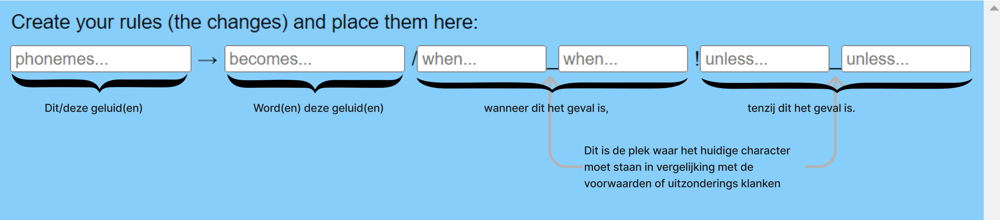
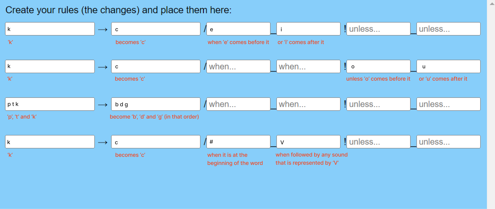
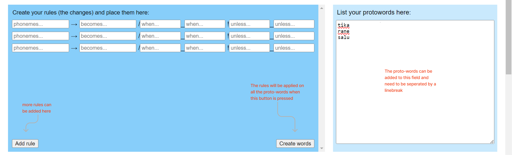
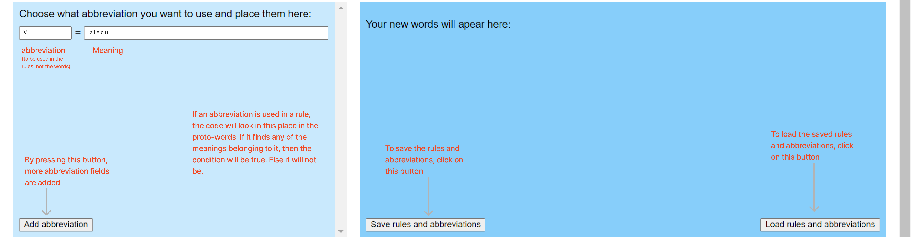

How does this site work?
First, you have to create your own rules (or changes), which will later on be applayed to all the proto-words. The rules that are created have to be in a specific format.
Below, there are a few examples of what this can look like.
You can add in more rules and fill in your proto-words. When you are done, you can click on the button 'Create words'.
You can use abbreviation in your rules, but you will have to create those first. It is also possible to save both the rules and te abbreviations and to load those later on so that you don't have to fill those in every time.

There are different symbols that can be used in the rules. These are the following:
Ø = nothing. Can be used in rules and represents nothing. For example, a sound can dissapear if it becomes nothing.
# = wordboundaries (the beginning of the end of the word). Can only be used in the rules. For example, you can say a sound becomes another sound, unless it is at the beginning of the word.
( ) = all the characters between these are optional. Can only be used in the rules.
[ ] = one of these characters. Can only be used in rules. For example, when there are an 'u' and 'o' between those brackets, then the rule matches if there is an 'u' or 'o'.
: = A long sound. This comes after a character with a long sound. Can be used in both the rules and the proto-words.
“ = stress of a word. It comes before the vowel with the stress. Can be used in both the rules and the proto-words.